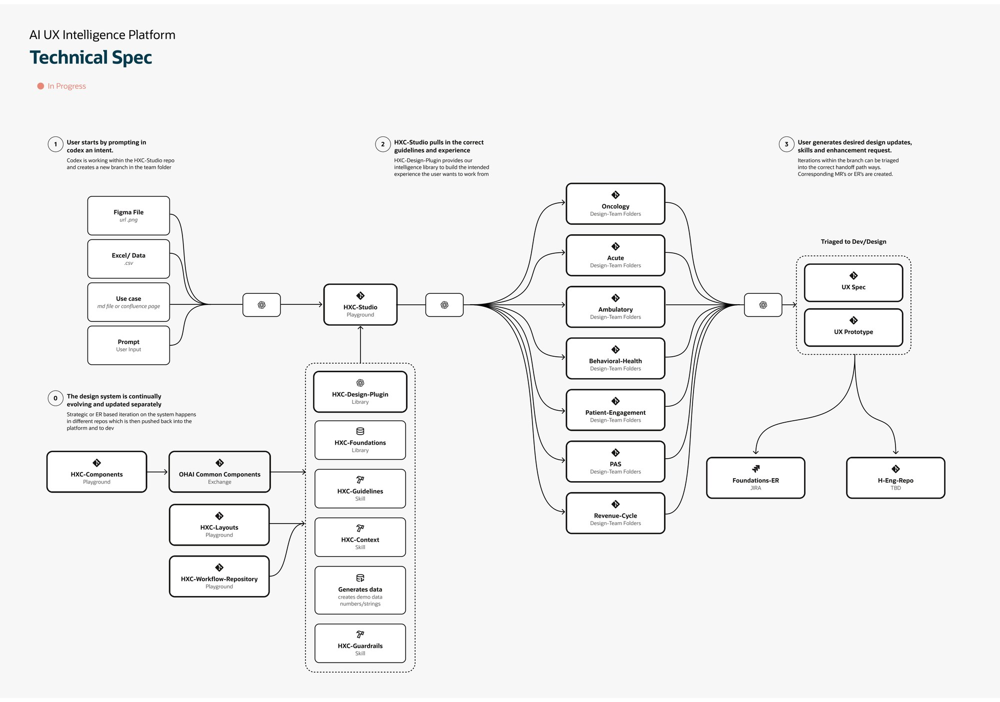
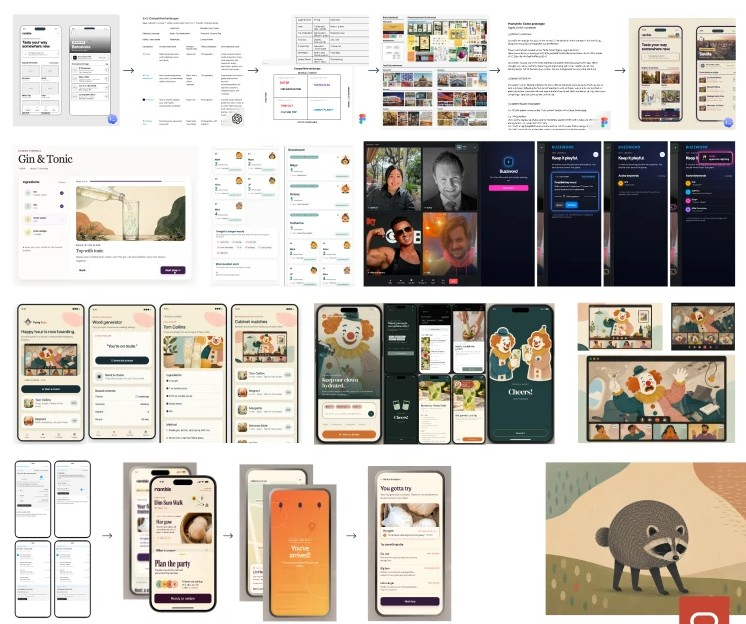
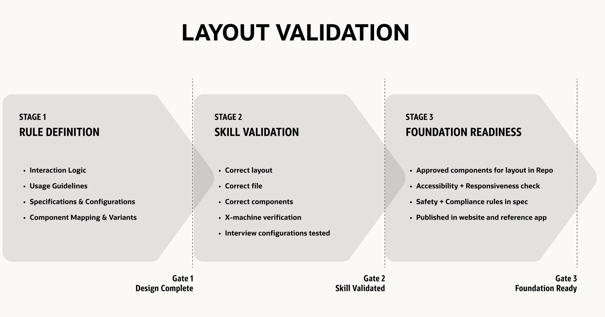

Oracle Health
- Role Director, User Experience Design. 2024 to present.
- Team Experience Core, the platform design team I established. Sets the design standard for five product teams and dozens of clinician-facing applications.
- Work Interaction patterns, components, design system, research practice. Named inventor on eight patent applications filed by Oracle.
Most of the work is unreleased and stays inside Oracle. What I can show is the operating model, because the operating model is the work.
Organize around the journey
Experience Core inherited thirty-four patterns, no structure. I grouped them by the clinician's journey, each stage a job in the user's words: access, triage, interpret, execute, collaborate, follow up. Ownership followed, then the team. A designer owns a stretch of journey, not a pile of components.

From comps to rules
We stopped shipping Figma comps; the deliverable became the rules. Components get guidelines, reference a person or a model can look up. Layouts and patterns get skills, which carry the judgment of when, when not, and how. A skill selects and configures. It does not code.
I wrote the first skills myself, then gave each designer a pattern and its skill. Concept to testable prototype went from weeks to days, and we validated considerably more concepts per cycle.

Upskilling the team
A new toolchain is a leadership problem first. I ran a learning day: no product work, no clinical constraints, a made-up brief each, and one rule, ship a working prototype by day's end. Everyone did, some of it silly on purpose. The fear left in an afternoon.
Each designer then owned a pattern and its skill, so the learning had somewhere to land. The pipeline, the tooling, the shared skill library: designers built them for themselves.

Three gates and a definition of done
Layouts kept misaligning because nobody shared a definition of done. I wrote one as three gates; release approval by the platform leads with Dev and Product follows the third.
I aligned eight Dev and PM pillar leads first, then SVP peers, then the top. The Action List skill and a three-role human-factors demo became the reference example senior engineering leadership pointed to.